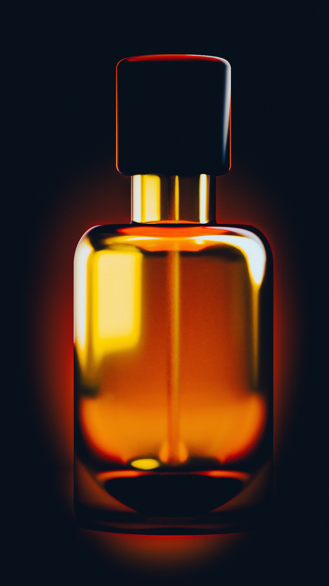
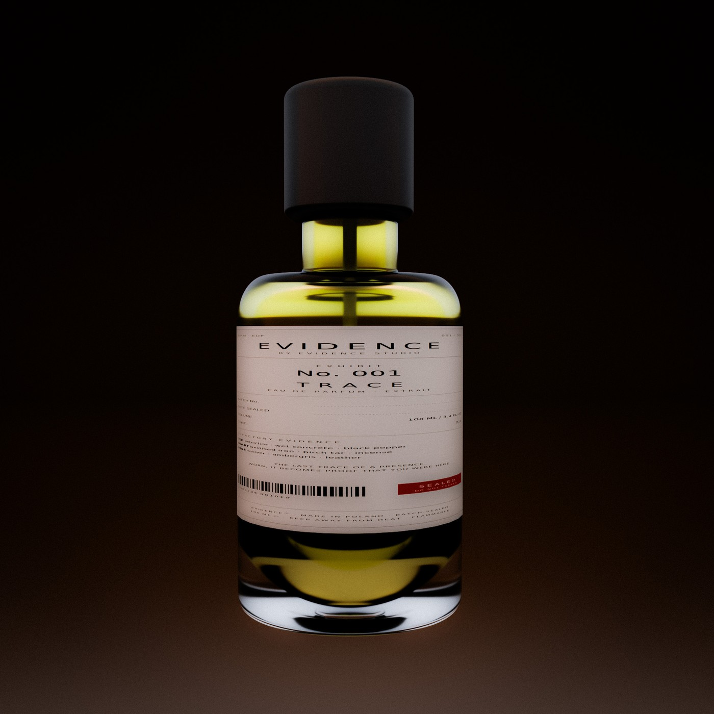
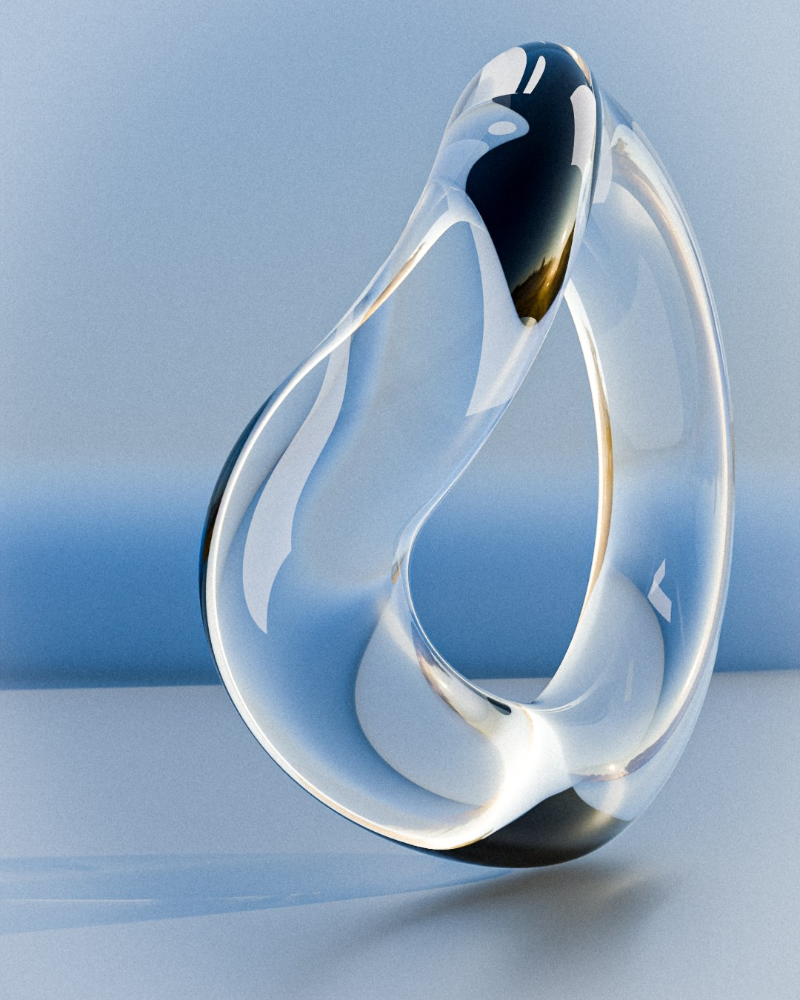
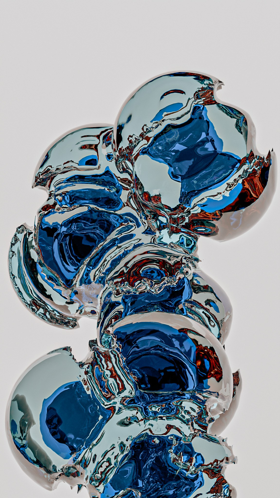
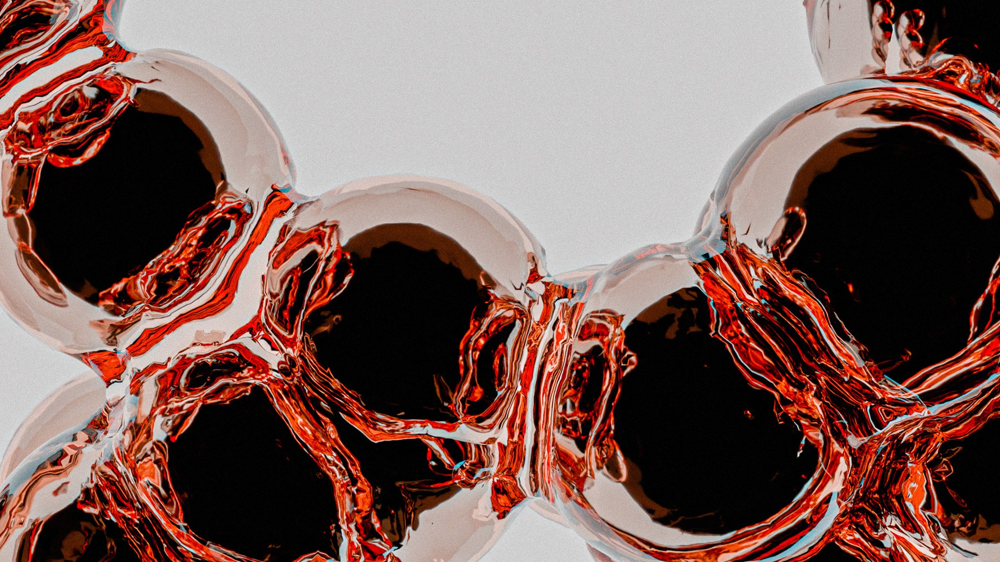

Wybór prac pod jeden konkretny fragment Pana briefu: materiał szkła, ciecz, refrakcja i kaustyka. Materiały, światło, symulacja, render i grading — moje, w całości.
Ta sama scena i ten sam materiał, raz jako mroczny kadr z podświetleniem od tyłu, raz jako czysty packshot. Bursztyn nie jest kolorem powierzchni tylko absorpcją w objętości — ciemnieje przy dnie i rozpala się tam, gdzie światło przechodzi przez cieńszą warstwę. Whisky trzeba zbudować dokładnie tak samo.


Czysty test materiału, bez cieczy i bez brandingu. Forma czyta się wyłącznie odbiciami i załamaniem światła, a w cieniu leży kaustyka. To ten sam problem, co ścianka szklanki w zbliżeniu.

Seria robiona po to, żeby wycisnąć z shaderów maksimum: cienkie ścianki, wielokrotne odbicia wewnętrzne, aberracja na krawędziach. Kierunek jest tu celowo stylizowany — to test materiału, nie propozycja klimatu do Pana gry.


Inny solver niż ciecz, ale ta sama robota: przygotowanie symulacji, kontrola timingu, bake, render i grading do gotowego pliku. Dowód, że sekwencje wychodzą ode mnie skończone, a nie jako podgląd z viewportu.